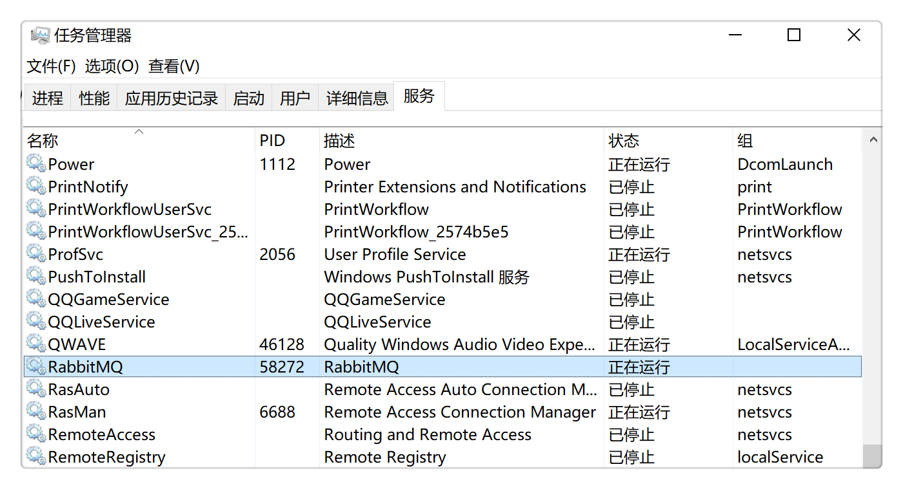
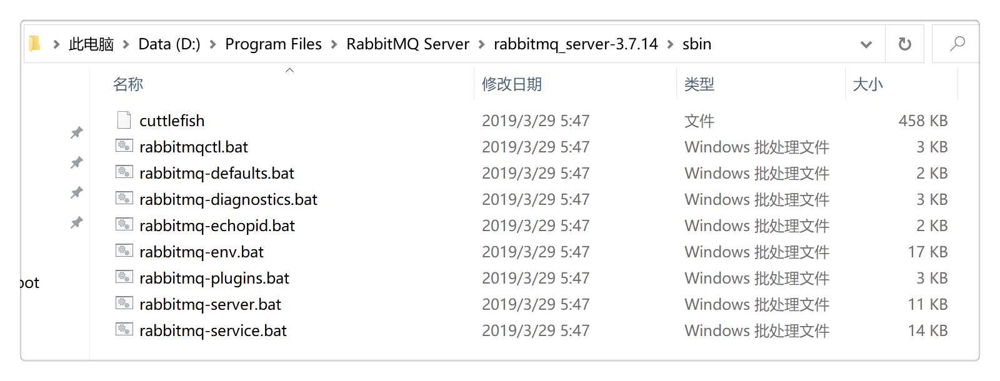
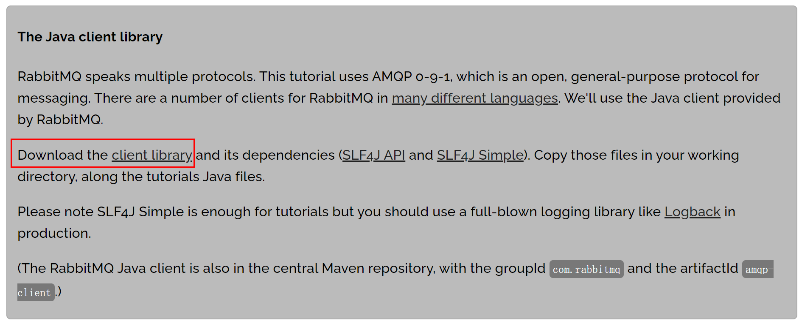
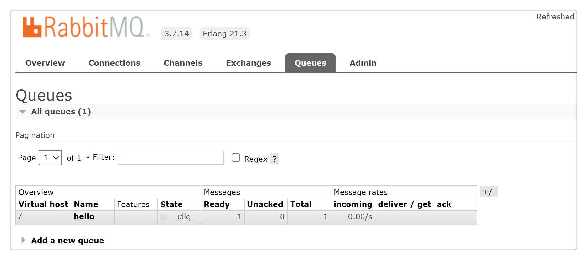

1 你好RabbitMQ消息队列¶

消息队列¶
RabbitMQ是一个消息队列，它能够接收和转发消息。这个过程就像寄快递一样，把物件打包给快递小哥，快递小哥会负责把物件派送到正确的地址。
生产者和消费者¶
生产者就是用来生产消息（发送消息）的：

消费者就是用来消费消息（接收消息）的：

在生产者和消费者之间的就是消息队列：

它相当于消息缓冲区，最多能存储多少数据只受限于机器的内存和磁盘。多个生产者可以发送消息给同一个队列，多个消费者也可以从同一个队列接收消息。

Windows安装RabbitMQ¶
参考mall商城学习教程的RabbitMQ部分内容：
http://www.macrozheng.com/#/architect/mall_arch_09?id=rabbitmq
原文中rabbitmq-server-3.7.14.exe下载地址失效了，改从这里下载：
https://github.com/rabbitmq/rabbitmq-server/releases/tag/v3.7.14
安装完成后，确认服务已开启：

进入RabbitMQ安装目录下的sbin目录：

在地址栏输入cmd并回车启动命令行，然后输入以下命令启动管理功能：
rabbitmq-plugins enable rabbitmq_management
RabbitMQ运行在本地机器上：

默认用户名密码为guest / guest：

Java客户端¶
amqp-client-5.7.1.jar是RabbitMQ官方提供的Java客户端：
https://www.rabbitmq.com/tutorials/tutorial-one-java.html

既可以直接下载jar包，也可以在Maven中添加依赖：
<dependency>
<groupId>com.rabbitmq</groupId>
<artifactId>amqp-client</artifactId>
<version>5.14.2</version>
</dependency>
生产消息¶

导包：
import com.rabbitmq.client.ConnectionFactory;
import com.rabbitmq.client.Connection;
import com.rabbitmq.client.Channel;
创建类Send，定义队列名为hello：
public class Send {
private final static String QUEUE_NAME = "hello";
public static void main(String[] argv) throws Exception {
...
}
}
建立连接：
ConnectionFactory factory = new ConnectionFactory();
factory.setHost("localhost");
try (Connection connection = factory.newConnection();
Channel channel = connection.createChannel()) {
}
代码中创建了一个Connection实例和一个Channel实例，它们都用try语句包裹了起来，这是因为Connection和Channel类都实现了
java.io.Closeable，try语句会自动关闭连接。
声明消息队列，并发送Hello World!消息到队列中：
channel.queueDeclare(QUEUE_NAME, false, false, false, null);
String message = "Hello World!";
channel.basicPublish("", QUEUE_NAME, null, message.getBytes());
System.out.println(" [x] Sent '" + message + "'");
声明消息队列是个幂等操作，重复声明不会重复创建队列。
消息体是字节数组（byte array）。
Send.java完整代码：
https://github.com/rabbitmq/rabbitmq-tutorials/blob/master/java/Send.java
import com.rabbitmq.client.Channel;
import com.rabbitmq.client.Connection;
import com.rabbitmq.client.ConnectionFactory;
import java.nio.charset.StandardCharsets;
public class Send {
private final static String QUEUE_NAME = "hello";
public static void main(String[] argv) throws Exception {
ConnectionFactory factory = new ConnectionFactory();
factory.setHost("localhost");
try (Connection connection = factory.newConnection();
Channel channel = connection.createChannel()) {
channel.queueDeclare(QUEUE_NAME, false, false, false, null);
String message = "Hello World!";
channel.basicPublish("", QUEUE_NAME, null, message.getBytes(StandardCharsets.UTF_8));
System.out.println(" [x] Sent '" + message + "'");
}
}
}
消费消息¶

消费消息的代码跟生产消息的代码类似，也需要导包，建立连接：
import com.rabbitmq.client.Channel;
import com.rabbitmq.client.Connection;
import com.rabbitmq.client.ConnectionFactory;
import com.rabbitmq.client.DeliverCallback;
public class Recv {
private final static String QUEUE_NAME = "hello";
public static void main(String[] argv) throws Exception {
ConnectionFactory factory = new ConnectionFactory();
factory.setHost("localhost");
Connection connection = factory.newConnection();
Channel channel = connection.createChannel();
channel.queueDeclare(QUEUE_NAME, false, false, false, null);
System.out.println(" [*] Waiting for messages. To exit press CTRL+C");
}
}
消费者也声明了一个消息队列，因为有可能消费者比生产者先启动。这样能确保消费消息时，有队列存在。
消费者没有用try语句，因为消费者一直在异步监听消息，如果把连接关闭了，它就没法消费了。
导包中有个DeliverCallback，通过它就能消费消息：
DeliverCallback deliverCallback = (consumerTag, delivery) -> {
String message = new String(delivery.getBody(), "UTF-8");
System.out.println(" [x] Received '" + message + "'");
};
channel.basicConsume(QUEUE_NAME, true, deliverCallback, consumerTag -> { });
因为发送消息和接收消息都是异步的，所以它叫做，callback，回调。
Recv.java完整代码：
https://github.com/rabbitmq/rabbitmq-tutorials/blob/master/java/Recv.java
import com.rabbitmq.client.Channel;
import com.rabbitmq.client.Connection;
import com.rabbitmq.client.ConnectionFactory;
import com.rabbitmq.client.DeliverCallback;
import java.nio.charset.StandardCharsets;
public class Recv {
private final static String QUEUE_NAME = "hello";
public static void main(String[] argv) throws Exception {
ConnectionFactory factory = new ConnectionFactory();
factory.setHost("localhost");
Connection connection = factory.newConnection();
Channel channel = connection.createChannel();
channel.queueDeclare(QUEUE_NAME, false, false, false, null);
System.out.println(" [*] Waiting for messages. To exit press CTRL+C");
DeliverCallback deliverCallback = (consumerTag, delivery) -> {
String message = new String(delivery.getBody(), StandardCharsets.UTF_8);
System.out.println(" [x] Received '" + message + "'");
};
channel.basicConsume(QUEUE_NAME, true, deliverCallback, consumerTag -> { });
}
}
运行代码¶
运行``Send.java``生产消息后，能看到RabbitMQ后台已经有1条消息：

和1个消息队列：

并且发送完成后就断开了连接。
运行``Recv.java``消费消息后，能看到队列中已经没有消息了：

而消费者仍然保持着连接，持续监控新消息。如果把消费者停掉，连接就会断开。
从消息队列中能看到整个过程如下图所示：